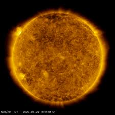
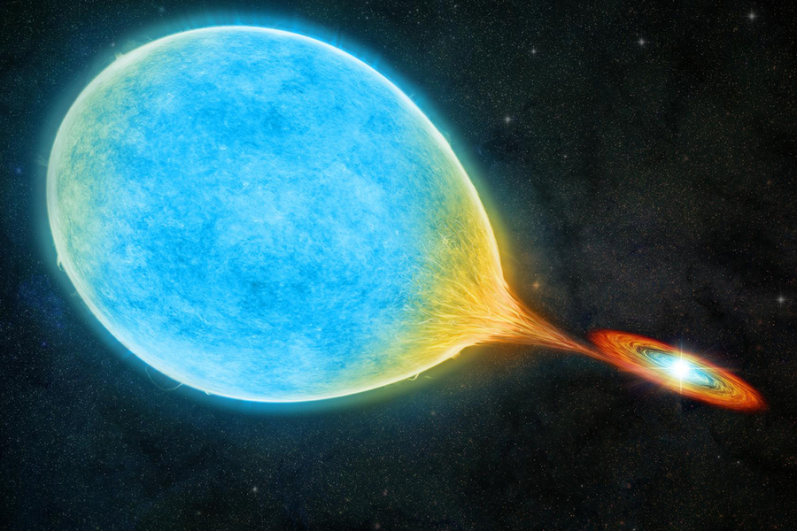
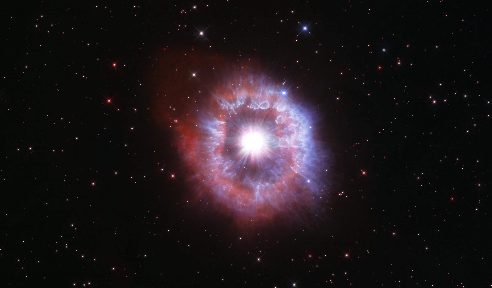

Zvezda (ijek. zvijezda) je nebesko telo koje zrači sopstvenom svetlošću. Sferoidnog je oblika, a u stanju plazme (visoko jonizovanog gasa na velikoj temperaturi) sastoji se najviše od vodonika i helijuma, i tek malog dela od drugih elemenata. Zvezda stvara energiju u svom jezgru termonuklearnim reakcijama. Ta energija se prenosi u okolni prostor putem konvekcije i elektromagnetnog zračenja i čestica.
Većina atoma hemijskih elemenata težih od helijuma koji trenutno postoje u vasioni, kao i svi elementi teži od litijuma su nastali u središtima zvezda preko procesa nukleosinteze.
| Gorivni materijal |
Temperatura (miliona Kelvina) |
Gustina (kg/cm³) |
Trajanje sagorevanja (τ u godinama) |
| H |
37 |
0.0045 |
8.1 miliona |
| He |
188 |
0.97 |
1.2 miliona |
| C |
870 |
170 |
976 |
| Ne |
1,570 |
3,100 |
0.6 |
| O |
1,980 |
5,550 |
1.25 |
| S/Si |
3,340 |
33,400 |
0.0315 |
Najbliža zvezda Zemlji je Sunce, izvor svetlosti, toplote i života za našu planetu. Ostale zvezde (sa izuzetkom pojedinih supernova) su vidljive samo tokom noći, kao sjajne tačke na nebu koje trepere usled efekta Zemljine atmosfere. U svakodnevnom govoru pod pojmom zvezde se ponekad smatraju i vidljive planete, pa čak i komete i meteori. Najbliža zvezda Zemlji, osim Sunca, je Proksima Kentauri koja je udaljena oko 40 Pm (petametara), odnosno 4,3 SG (svjetlosne godine), ili 1,3 pc (parseka). To znači da svetlosti treba 4,3 godine da stigne do Zemlje sa ove zvezde. Ipak, pored ove udaljenosti i nekoliko puta većih udaljenosti, postoji još nekoliko zvezda koje smatramo najbližim (vidi spisak najbližih zvezda).
U našoj galaksiji procenjuje se da ima oko 200 milijardi zvezda. Odnos sjaja i veličine zvezde prikazuje se Hercšprung-Raselovim dijagramom. Smatra se da ima najmanje 70 sekstiliona zvezda u poznatom delu našeg Svemira (70 000 000 000 000 000 000 000 ili 7 × 1022).
Veliki broj zvezda je starosti oko milijardu ili 10 milijardi godina. Neke zvezde čak mogu dostići i 13,7 milijardi godina, što predstavlja približnu starost Svemira. Prema veličini razlikujemo sićušne neutronske zvezde (koje su u stvari mrtve zvezde ne veće od nekog gradića), supergigante (veledivove) kakvi su Severnjača i Betelgez prečnika koji je oko 1 000 veći od Sunčevog, ali i pred toga su mnogo manje gustine nego Sunce. Jedna od najmasivnijih zvezda je Eta Pramca čija je masa 100-150 puta veća od Sunčeve.
Stelarna astronomija proučava zvezde i pojave koje pokazuju različiti oblici/razvojna stanja zvezda. Procenjuje se da je većina zvezda silama gravitacije povezane sa drugim zvezdama formirajući tako dvojne zvezde (binarne zvezde). Takođe postoje i veće zvezdane grupe poznate kao zvezdana jata ili klasteri. Zvezde nisu jednoliko raspršene u Svemiru već se grupišu u još veće zvezdane grupe poznate kao galaksije. Običnu galaksiju sačinjavaju bilioni zvezda.
Merne jedinice
Mada stelarni parametri mogu da budu izraženi u SI jedinicama ili CGS jedinicama, obično je najpodesnije da se masa, luminoznost, i radijusi izraze u solarnim jedinicama, baziranim na karakteristikama Sunca:
Sunčeva masa: M☉ = 1.9891 × 1030 kg
Sunčeva luminoznost: L⊙ = 3.827 × 1026 W
Sunčev radijus R⊙ = 6.960 × 108 m
Velike dužine, kao što je radijus gigantske zvezde ili polu-osa binarnog sistema zvezda, se često izražavaju u astronomskim jedinicama (AU) — približno srednjem rastojanju između Zemlje i Sunca (150 miliona km ili 93 miliona milja).
Formacija i evolucija
Stelarna evolucija zvezda male mase (levi ciklus) i velike mase (desni ciklus), sa primerima

Beli patuljak
Prema mišljenju astronoma, zvezde nastaju u molekularnim oblacima, tj. velikim područjima neznatno velike gustine materije i koje nastaju zbog gravitacione nestabilnosti unutar ovih oblaka. Gravitaciona nestabilnost pokreće udarne talase iz supernove, a gustina materije je još manja od zemaljske vakuumske komore.
Zvezde iz glavnog niza provode oko 90% svoga „života“ trošeći vodonik u procesu fuzije da bi proizvele helijum u reakcijama pod visokim pritiskom u blizini jezgra.
Pošto većina zvezda potroši svoje zalihe vodonika, ulazi u nestabilnu fazu sagorevanja helijuma, i tad se njihovi spoljni slojevi šire i hlade, pa tako formiraju crvene džinove. Za približno 6 milijardi godina, kada Sunce postane crveni džin, spržiće planete Merkur i Veneru. U međuvremenu se jezgro dovoljno kompresuje kako bi mogla započeti nuklearna fuzija daljih elemenata, a zvezda se pregrejava i sabija. Teže zvezde proizvode u procesu fuzije i teške elemente, zaključno do gvožđa.
Zvezda prosečne veličine će zatim raspršiti svoje spoljne slojeve praveći tako planetarnu maglinu. Jezgro koje preostaje će postati mala loptica degenerisane materije nedovoljno masivna za dalji proces fuzije i koju održava degenerativni pritisak. Ovakav objekat se zove beli patuljak. On sagoreva svoje gorivo vrlo sporo, od sto do bilion godina. Potom, kako vreme odmiče, će se dovoljno ohladiti i na kraju će se pretvoriti u crnog patuljka.
Kod većih zvezda fuzija se odvija dok se ne završi sažimanje uzrokujući eksploziju te zvezde i nastanak supernove. Ovo je jedini kosmički proces koji se dešava tokom ljudskog veka. Tokom istorije su opservirane kao „nove zvezde“ kojih nije bilo pre. Većina zvezdane materije se rasprši tokom eksplozije formirajući maglice (poput Rak magline), a njeni ostaci kolabriraju u neutronsku zvezdu (pulsar ili rendgenski raspršivač, ili u slučaju većih zvezda u crnu rupu.
U sastav raspršenih spoljnih slojeva ulaze i teški elementi od kojih se često grade nove zvezde ili planete. Ispuštena materija iz supernove i zvezdani vetar velikih zvezda igraju ključnu ulogu u oblikovanju međuzvezdane sredine.
Zvezdana evolucija uglavnom objašnjava nastanak i nestanak zvezda.
Stabilnost zvezde

Dijagram opisuje model zvezde, tipa našeg Sunca. Autorstvo slike: NASA
Stabilnost zvezde zavisi od dve međusobno suprotstavljene sile:
termonuklearne reakcije oslobađaju ogromnu energiju u vidu ogromnog broja fotona koji dovode do ogromnog pritiska u zvezdi usmerenog ka spolja, težeći da rasprši materijal zvezde u okolni prostor
sila gravitacije, koja se tome suprotstavlja, nastoji da zadrži masu zvezde na okupu i da je što više sažme.
Ako prevlada sila gravitacije, materijal zvezde se sažima, pa nastaju zvezde u kojima je materija sabijena do vrlo visokih gustina (beli patuljci) ili ako je masa veća od Čandrasekarove granice, nastaje neutronska zvezda. Ukoliko je masa zvezde još veća dolazi do beskonačnog sažimanja u fizički singularitet iz kojeg više ne može pobeći čak ni svetlost, te nastaje crna rupa.
Klasifikacija zvezda
Glavni članak: Zvezdana klasifikacija
Razni tipovi zvezda imaju i različite spektre. Oni su jedan od glavnih izvora podataka o zvezdama. Spektar zvezde se snima pomoću spektrografa i on pokazuje različite tamne i svetle linije koje karakterišu pojedine hemijske elemente. Vruće i mlade zvezde kojima je glavni izvor energije fuzija vodonika u helijum, imaće izražene karakteristične linije ta dva elementa. Zvezde srednjih tipova imaju mnogo linija težih elemenata, a crvene zvezde imaju puno linija koje odgovaraju molekulima kao što je titanijum-oksid. Prema zvezdanim merilima upravo su one, crvene zvezde, stare zvezde.
Redosled “O B A F G K M” predstavlja temperaturni niz od vrućih, plavih O zvezda, prema hladnijim, crvenim M zvezdama. Prva 3 tipa se nazivaju ranim spektralnim tipom, a poslednja tri kasnim, budući da se pre mislilo da je to evolutivni niz. Danas je poznato da se to odnosi na razlike u masi, ali redosled je zadržan.
Glavni tipovi su se proširili dodavanjem podtipova označenih brojevima od 0-9 (npr. B0-B9). U početku fizički smisao ovakve podele nije bio poznat, tek sa primenom kvantne mehanike i statističke fizike moguće je bilo pronaći uzroke različitih spektara.
Imena
Mnoge zvezde se identifikuju samo prema kataloškim brojevima, a samo ih nekoliko ima vlastito ime. Imena su tradicionalna i uglavnom su poreklom iz arapskog, latinskog i grčkog jezika, pa kao Flemstidove designacije ili kao Bajerove designacije. Jedina ustanova kojoj je danas dato pravo od strane naučnih krugova da imenuje zvezde i druga nebeska tela je Međunarodna astronomska unija. Jedan broj privatnih kompanija (poput Međunarodnog zvezdanog registra) tvrde da daju imena zvezdama, ali ipak ova imena ne prihvataju naučni krugovi, niti ih koriste.
Struktura
Unutrašnje strukture zvezda glavnog niza, konvekcione zone sa kružnim strelicama i radijativne zone sa crvenim blicevima. Levo je crveni patuljak male mase, u centru je žuti patuljak srednje veličine i desno je masivna plavo-bela zvezda glavnog niza.
Unutrašnjost stabilne zvezde je u stanju hidrostatičke ravnoteže: sile u bilo kojoj maloj zapremini su skoro precizno uravnotežene. Balansirane sile su: gravitaciona sila koja je usmerena ka unutrašnjosti i sila koja deluje u suprotnom smeru usled gradijenta pritiska unutar zvezde. Gradijent pritiska se uspostavlja putem temperaturnog gradijenta plazme; spoljašnji deo zvezde je hladniji od jezgra. Temperatura jezgra zvezde glavnog niza ili gigantske zvezde je bar reda 107 K. Rezultirajuća temperatura i pritisak u jezgru gde vodonik sagoreva je dovoljna da dođe do nuklearne fuzije i dovoljno energije se proizvodi da bi se sprečio dalji kolaps zvezde.
Pri spajanju atomskih nukleusa u jezgru zvezde, oni emituju energiju u obliku gama zraka. Ti fotoni formiraju interakcije sa okružujućom plazmom, dodajući termalnu energiju u jezgro. Zvezde glavnog niza konvertuju vodonik u helijum, kreirajući sporo ali postojano helijum u jezgru. Konačno sadržaj helijuma postaje predominantan i dolazi do prestanka oslobađanja energije u jezgru. Nakon toga, kod zvezda sa više od 0.4 M☉, fuzija se odvija u sporo ekspandirajućoj ljusci oko helijumskog jezgra.
Načini reakcija nuklearne fuzije
Pregled proton-proton lanca
Ciklus ugljenik-azot-kiseonik
Nuklearna fuzija je bitna jer je ona uzrok gašenja zvezda. Fuzija je proces pri kojem se nukleusi dva lakša atoma spajaju u jedan teži nukleus. Iako je nukleus koji nastane na ovaj način teži od bilo kojeg atoma od kojih je nastao, nije teži od zbira njihovih težina. Ova izgubljena masa je transformisana u drugi vid energije (svetlost i toplotu). Fuziji ne podležu svi hemijski elementi. Mnogo ređe dolazi do fuzije teških elemenata. Nakon što se fuzijom dođe do kreiranja gvožđa (Fe) pri reakciji ne dolazi do oslobađanja energije. Zbog ovog se zvezde hlade. Fuzijom dolazi do spajanja svih atoma pri čemu nastaju razne vrste atoma sa raznim masama sve dok ne dođe do kreiranja atoma gvožđa. Nakon toga zvezde ne mogu više da proizvode toplotu, počinju da se hlade i nakon jako dugog vremenskog perioda se i ugase.
Proces vodonične fuzije je senzitivan na temperaturu, tako da umereno povećanje temperature jezgra dovodi do znatnog povećanja brzine fuzije. Konsekventno temperatura jezgra zvezda je u opsegu od 4 miliona Kelvina za male zvezde M-klase do 40 miliona Kelvina za masivne zvezde O-klase.
Razne reakcije nuklearne fuzije se odvijaju u unutrašnjosti zvezdanih jezgara, zavisno od njihove mase i hemijskog sastava (v. stelarna nukleosinteza).

Minimalna sunčeva masa neophodna za fuziju
Element Sunčeve
mase
Vodonik 0.01
Helijum 0.4
Ugljenik 5
Neon 8
Zvezde počinju svoj život kao oblaci koji su sastavljeni 70-90% od vodonika, većinu ostatka čini helijum, a težih hemijskih elemenata ima veoma malo.
U Suncu sa temperaturom jezgra od oko 107 K, i vodonik se troši u procesu fuzije da bi nastao helijum u tzv. proton-proton reakciji:
2(1H + 1H → 2H + e+ + νe) (4.0 MeV + 1.0 MeV)
2(1H + 2H → 3He + γ) (5.5 MeV)
3He + 3He → 4He + 1H + 1H (12.9 MeV)
Ove reakcije konačno postaju:
41H → 4He + 2e+ + 2γ + 2νe (26.7 MeV)
U masivnijim zvezdama helijum se proizvodi tokom ciklusa reakcija kataliziranim ugljenikom, tj. tzv. ugljik-azot-kiseonik ciklusa.
U zvezdama sa temperaturama jezgra od 108 K i masama između 0,5 MSunca i 10 MSunca helijum se transformiše u ugljenik u trostrukom afa-procesu:
4He + 4He + 92 keV → 8*Be
4He + 8*Be + 67 keV → 12*C
12*C → 12C + γ + 7.4 MeV
Opšti oblik ove reakcije je:
34He → 12C + γ + 7.2 MeV.
U masivnim zvezdama, teži elementi takođe mogu da sagorevaju u kontraktujućem jezgru putem procesa neonskog sagorevanja i procesa kiseoničnog sagorevanja. U finalnom stadijumu procesa zvezdane nukleosinteze dolazi do procesa sagorevanja silicijuma koji dovodi do produkcije stabilnog izotopa gvožđa-56. Fuzija se ne može dalje odvijati, izuzev putem endotermnog procesa, tako da se nakon toga energija može osloboditi samo putem gravitacionog kolapsa.
Donja tabela ilustruje količine vremena koje se neophodne za zvezdu sa 20 M☉ da konzumira svo svoje nuklearno gorivo. Kao zvezda O-klase, ona ima 8 puta veći radijus i 62.000 puta veću luminoznost.
Beli patuljak u orbiti oko Sirijusa (umetnički prikaz).
Zvezde nisu ravnomerno raširene po svemiru, nego su normalno grupisane u galaksije zajedno sa interstelarnim gasom i prašinom. Tipična galaksija sadrži stotine milijardi zvezda, i ima više od 100 milijardi (1011) galaksija u vidljivom svemiru. Godine 2010, jedna procena broja zvezda u vidljivom svemiru je bila 300 sekstiliona (3 × 1023). Mada se obično veruje da zvezde postoje samo unutar galaksija, otkrivene su i intergalaktičke zvezde.
Višezvezdani sistem se sastoji od dve ili više gravitaciono vezane zvezde koje rotiraju jedna oko druge. Najjednostavniji i najčešći višezvezdani sistem je binarna zvezda, mada su isto tako nađeni sistemi sa tri ili više zvezda. Radi orbitalne stabilnosti, takvi višezvezdani sistemi su često organizovani u hijerarhijske setove binarnih zvezda. Velike grupe zvane zvezdani klasteri takođe postoje. Oni su u opsegu od labavih stelarnih asocijacija sa samo nekoliko zvezda, sve do enormnih globularnih klastera sa stotinama hiljada zvezda. Takvi sistemi rotiraju oko svoje galaksije.
Dugo vremena postoji pretpostavka da se većina zvezda javlja u gravitacionom vezanim, višezvezdanim sistemima. To posebno važi za veoma masivne O i B klase zvezda, gde se smatra da 80% zvezda pripada multizvezdanim sistemima. Proporcija jednozvezdanih sistema se povećava sa smanjenjem zvezdane mase, tako da je za samo 25% crvenih patuljaka poznato da imaju stelarne pratioce. Kako su 85% svih zvezda crveni patuljci, većina zvezda u Mlečnom putu je verovatno bila samostalna od nastanka.
Najbliža zvezda Zemlji, osim Sunca, je Proksima Kentauri, koja je udaljena 39.9 triliona kilometara, ili 4.2 svetlosne godine. Putujući orbitalnom brzinom Spejs-šatla (8 km u sekundi — skoro 30.000 km na sat), bilo bi potrebno skoro 150.000 godina da se dosegne. To je tipična stelarna separacija u galaktičkim diskovima. Zvezde mogu da budu znatno bliže jedna drugoj u centrima galaksija i u globularnim klasterima, ili daleko udaljenije u galaktičkim spiralama.
Usled relativno ogromnih rastojanja između zvezda izvan galaktičkog jezgra, smatra se da su kolizije između zvezda retke. U gušćim regionima kao što je jezgro globularnog klastera ili galaktički centar, kolizije su češće. Takve kolizije mogu da proizvedu takozvane zvezde plavog zaostajanja. Te abnormalne zvezde imaju višu temperaturu površine nego druge glavne sekvence zvezda sa istim sjajem u klasteru kome pripadaju.
Zvezda u mitologiji, filozofiji i poeziji
Verovalo se da se Sunce ujutro rađa, a naveče umire i da se svaki dan rađa novo Sunce. Tako je istok postao mesto istine i nade u život, a zapad tame, smrti i zla. Stoga, između ostalog, pravoslavni hramovi i grobovi su okrenuti ka istoku. Betlehemska zvezda vodilja vodi tri mudraca do pećine gde se rodio Spasitelj. Zvezde su predstavljale prostorno-vremensku orijentaciju za ljude u svim vremenima. Ljudi koji veruju u sudbinu smatraju da je sve zapisano u zvezdama, a od zvezda su stvorena i mitološka bića. Zvezda je čest motiv na zastavama muslimanskih zemalja zbog predislamske paganske tradicije poštovanja zvezda kao božanstava.